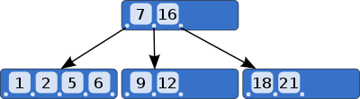
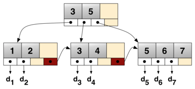
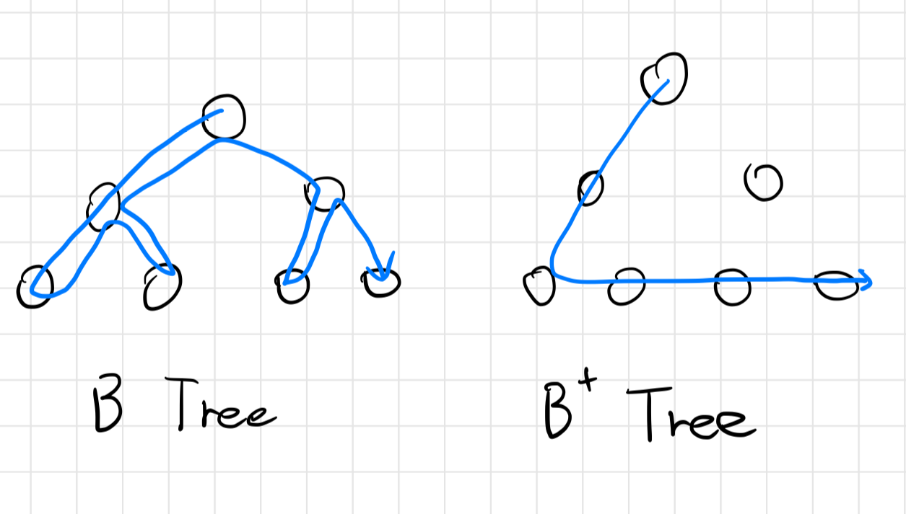

[자료구조] B Tree와 B+tree 알아보기
서론
CS 스터디에서 2월 13일에 발표한(정확히는 나는 2일 뒤인 15일에 발표했다.) B 트리와 B+ 트리에 대해 정리한 문서를 블로그에 공유하고자 한다.
B-Tree와 B+Tree는 무엇일까
B 트리 (B-Tree)

이진 트리를 확장해 한 노드가 가질 수 있는 자식 노드의 갯수가 2개 이상인 자가 균형 이진 검색 트리(Self Balancing Binary Search Tree)의 일종이며, 각 노드가 갖고있는 키 들은 정렬되어 있습니다.
다른 자체 균형 이진 검색 트리와 달리, B 트리는 DB, File System과 같이 큰 데이터 블록을 읽고 써야하는 스토리지 시스템에 적합합니다.
B 트리의 성질
차수 m(노드 중 가장 많은 자식을 갖는 노드의 자식 수)을 갖는 B 트리는 아래와 같은 성질을 만족합니다.
- 모든 노드는 최대 m개의 자식이 존재합니다.
- 모든 내부 노드는 최소 ⌈m/2⌉ 개의 자식이 존재합니다.
- 루트 노드는 (리프가 아닌 한) 최소 2개의 자식이 존재합니다.
- k개의 자식이 있는 리프가 아닌 노드는 k-1 개의 키를 갖고 있습니다.
B 트리의 노드들
B 트리를 이루는 노드는 내부 노드, 루트 노드, 리프 노드로 구성됩니다.
내부 노드 (Internal Node)
적어도 하나의 자식을 갖는 노드로, 리프 노드와 루트 노드를 제외한 모든 노드입니다.
이들은 일반적으로 하위 포인터, 데이터 포인터, 검색 키의 순서 집합으로 표현됩니다.
모든 내부 노드는 최대 U개에서 최소 L개의 자식을 포함합니다. 따라서 내부 노드 내 요소 수는 ‘하위 포인터 수 - 1’ 입니다. (요소 수는 L-1 보다 높고, U-1 보다 낮습니다.)
- 따라서 U는 2L 또는 2L - 1 이고, 각
내부 노드들은 최소 절반 이상 채워져 있습니다.- 이는 두 절반이 가득 찬 내부 노드를 하나의 노드로 병합하거나, 하나의 완전한 노드를 두 개의 정상적인 노드로 나눌 수 있음을 의미합니다.
- 이러한 점을 통해, B 트리는 새 값을 삽입하거나 삭제하고 B 트리 속성을 유지하도록 트리를 조절할 수 있습니다.
내부 노드의 구조
| $pt_0$ | $k_0$ | $pt_1$ | $pr_0$ | $k_1$ | $pt_2$ | $pr_1$ | … | $k_{K-1}$ | $pt_K$ | $pr_{K-1}$ |
|---|
- $pt_i$ : 하위 서브 트리의 루트 노드를 가리키는 포인터
- $pr_i$ : 데이터를 갖고 있는 레코드를 가리키는 포인터
- $k_i$: zero-based 노드 인덱스 $i$의 검색 키
또한, 각 내부 노드의 키는 해당 노드의 서브 트리를 나누는 기준 값으로 사용됩니다.
- 만약 내부 노드에 3가지 자식 노드(또는 트리)가 있는 경우, 내부 노드에는 최소 2개의 키(예시로 $a_1$, $a_2$)가 있어야 합니다.
- 가장 왼쪽 서브 트리의 모든 값은 $a_1$보다 작고, 중간의 서브 트리의 모든 값은 $a_1$ 보다 크고 $a_2$보다 작으며, 가장 오른쪽 서브 트리의 모든 값은 $a_2$보다 큽니다.
루트 노드 (Root Node)
루트 노드의 자식 수는 내부 노드와 동일한 상한이 존재하지만, 하한은 존재하지 않습니다.
- 전체 트리에 L-1 보다 적은 요소가 존재한다면, 루트 노드는 트리에서 자식이 전혀 없는 유일한 노드가 됩니다.
리프 노드 (Leaf Node)
실질적인 데이터 객체/청크를 갖는 노드입니다. 모든 리프 노드들은 같은 레벨에 존재해야 합니다.
B 트리의 장점
정렬되어있는 키
저장된 키들이 정렬되어 있어, 순차적인 순회에 유용합니다.
동일한 삽입/삭제/검색 시간 복잡도
기존의 이진 탐색 트리와 달리, 한 노드에 저장할 수 있는 키의 수가 많아 트리는 더 얕은 높이를 가질 수 있게 되었습니다.
이러한 계층형 인덱스를 사용하므로써 디스크 I/O가 줄어들어 더 낮은 삽입/삭제/검색 시간 복잡도를 가집니다.
이러한 점 때문에 B 트리는 대용량 데이터 셋, 실시간 애플리케이션에 적합합니다.
특히 DB에서 B 트리 인덱스를 사용하면 검색 성능을 크게 향상 시킬 수 있습니다.
- DBMS에서는 인덱스 키 - PK가 매칭이 되어있는 B 트리를 만들어두고 이를 사용합니다.
- 인덱스를 통해 PK를 찾고, 찾은 PK를 통해 레코드를 찾습니다.
- DBMS가 PK를 통해 레코드를 찾으려면, 테이블 전체를 뒤져 검색 해야하지만, B 트리 인덱스를 활용하면 트리를 몇 단계 탐색하므로써 PK를 찾을 수 있고 그 PK를 통해 레코드를 찾아올 수 있으므로 속도가 더 빠릅니다.
자체 균형
B 트리는 자체 균형 이진 검색 트리(Self Balancing Binary Search Tree)의 일종이므로 항상 최적의 높이를 유지하고자 지속적으로 스스로 균형을 맞추려고 합니다.
따라서 기존의 이진 검색 트리의 경우 작업이 최악의 경우(트리가 한쪽으로 쏠린 경우) O(N)의 시간 복잡도를 가졌지만, B 트리는 작업이 최악의 경우에도 O(logN)의 시간복잡도를 유지하도록 보장합니다.
자체 균형 이진 검색 트리(Self Balancing Binary Search Tree): 임의의 아이템 삽입/삭제 이후 자동으로 높이를 낮게 유지하는 노드 기반의 이진 검색 트리를 의미합니다. 대표적인 예시로 AVL 트리, B 트리, RBT 등이 있습니다.
B 트리의 단점
더많은 디스크 공간 사용
균형 유지를 위해 추가적인 포인터 및 헤더 정보를 유지해야 하므로 더 많은 공간을 사용합니다.
다른 자료 구조에 비해 느린 속도
삽입/삭제 연산 이후 균형 유지를 위해 회전, 병합과 같은 재배치 작업을 수행할 수 있으며, 이 과정에서 오버헤드가 발생할 수 있습니다.
B+ 트리 (B+ Tree)

위는 분기 인자 b=4이며, 1~7 범위의 키와 $d_1$ ~ $d_7$의 데이터 값들을 연결하는 b+ 트리 예시 입니다.
B 트리의 변종 중 하나로, 각 노드가 키-값 쌍이 아닌 키만 포함하며(인덱스 인트리) 하단에 링크드 리프 노드들로 이뤄진 추가적인 레벨(데이터 엔트리)이 붙어있는 B 트리로 볼 수 있습니다.
노드 당 m개 이하의 자식이 있는 다항 트리(m-ary tree) 라고도 일컬어지며, 분기 인자(branching factor, 각 노드 당 자식의 수) $b$ 를 기준으로 삽입/삭제/검색 작업이 $O(log_b{N})$ 의 시간 복잡도를 가집니다.
B+ 트리의 핵심 가치는 블록 지향 스토리지(block-oriented storage)(특히 파일 시스템)에서 효율적인 검색이 가능하도록 데이터를 저장하는 것입니다.
- 이진 검색 트리와 달리, B+ 트리는 팬아웃이 매우 높아 트리 내 요소를 찾는데 필요한 I/O 작업 횟수를 줄일 수 있기 때문입니다.
B+ 트리는 MS SQL, Oracle, SQLite 등의 RDBMS에서 테이블 인덱스를 구현하는데 활용됩니다.
B+ 트리의 성질
분기 인자가 $b$ 이며, 높이 h인 b+ 트리는 다음과 같은 성질을 갖습니다.
- 저장된 레코드는 최대 $n_{max} = b^h - b^{h-1}$ 개여야 합니다.
- 저장된 레코드는 최소 $n_{min} = 2\lceil {b\over2} \rceil^{h-1} - 2\lceil {b\over2}\rceil^{h-2}$ 개여야 합니다.
- 트리를 저장하기 위한 공간 복잡도는 O(n) 입니다.
- 레코드를 삽입/삭제/검색하는데 $O(log_b n)$의 시간 복잡도를 갖습니다.
- B+ 트리 구조는 레코드 수가 증가/감소 함에 따라 확장/수축 할 수 있으며, 크기에 제한이 없습니다.
- 리프 노드들이 링크드 리스트 형태로 이어져 있어 빠른
중위 순회(in-order traversal)가 가능합니다. - 리프 노드에서 부모 노드가 갖고 있는 키를 중복적으로 가질 수 있습니다(
Key Duplication).
B+ 트리의 장점
순서대로 탐색이 가능
B 트리의 경우 모든 데이터 포인터가 리프 노드에 있지 않기 때문에 순서대로 연결된 리스트를 만들 수 없지만, B+ 트리의 경우 모든 데이터 포인터가 리프 노드에 존재하므로 순서대로 연결된 리스트를 만들 수 있습니다. 이를 통해 범위 쿼리나 정렬된 데이터가 필요한 작업들을 쉽게 수행할 수 있습니다.
이러한 점 때문에, B+ 트리는 DB 시스템 인덱스를 구축하는데 유용합니다.
정렬되어있는 키
자체 균형
동일한 삽입/삭제/검색 시간 복잡도
B+ 트리의 단점
B 트리 대비 더 높은 메모리 사용
키, 값(데이터 포인터)을 각 노드에 저장하는 B 트리와 달리, B+ 트리는 내부 노드에는 키만 저장하고 리프 노드 층에 데이터를 저장하기 때문에 키의 개수에 비례해 추가적인 메모리가 필요합니다.
B+ Tree가 B Tree에 비해 반드시 좋다고 할 수 있을까? 그렇지 않다면 어떤 단점이?

웬만한 경우 B+ 트리가 B 트리 보다 더 빠르게 검색할 수 있기 때문에 좋다고 할 수 있습니다.
B+ 트리는 B 트리와 달리 내부 노드에 값(데이터)을 저장하지 않으므로써 내부 노드에 저장되는 키의 수, 즉 팬아웃을 최대화 했고, 이를 통해 트리의 높이를 최소화 하기 때문입니다.
또한 범위 검색 작업 을 효율적으로 진행할 수 있습니다. 리프 노드가 서로 연결되어 있기 때문입니다.
그리고 삽입/삭제 작업이 리프 노드에서 수행되어 더 쉽고 시간 소모가 적습니다.
하지만, B 트리의 경우 특정 노드를 자주 사용하는 경우 더 빠를 수 있습니다. 자주 사용되는 노드를 상승 시킬 수 있기 때문에, 원하는 데이터에 도달하는데 필요한 비교 작업이 적어지기 때문입니다.
DB에서 굳이 RBT와 같은 트리를 사용하지 않고, B-Tree/B+Tree를 사용하는 이유는?
더 빠르기 때문입니다.
이를 설명하려면 먼저 RBT, 즉 레드-블랙 트리(Red-Black Tree)의 구조에 대해 알아야 합니다.
RBT는 B 트리/B+ 트리와 마찬가지로 자가 균형 이진 검색 트리(Self Balancing Binary Search Tree) 의 일종으로, 각각의 노드가 레드 또는 블랙의 색상 속성을 갖습니다.
루트 노드와 모든 리프 노드들은 블랙이며, 레드 노드의 양 자식 노드들은 모두 블랙이라는 특징 때문에, RBT는 블랙과 레드가 번갈아 나오는 형태를 띄게 됩니다(물론 블랙 다음에 블랙이 나올 수도 있습니다).
이러한 특징 때문에 루트 노드로 부터 가장 먼 리프 노드까지의 거리가 가장 가까운 리프 노드까지의 거리의 2배 보다 항상 짧다는 특성을 지니고, 이 때문에 삽입/삭제/탐색에 있어 B 트리와 마찬가지로 $O(logN)$의 시간 복잡도를 갖게 됩니다.
하지만, RBT는 일반적인 BST와 같이 자식을 둘 밖에 가질 수 없으나 B 트리는 둘 이상 가질 수 있기 때문에 훨씬 트리 높이가 짧아지고 더 적은 디스크 I/O 작업을 수행해 결과적으로 더 빠른 속도로 탐색을 진행할 수 있습니다.
또한 B 트리의 경우 내부 노드의 두 개 이상의 키들을 배열 로 다루므로 RBT가 하위 노드들을 참조해 탐색하는 것 보다 더 빠른 접근 속도를 갖게 됩니다.
이러한 차이 때문에 DB에서 B 트리/B+ 트리를 사용하게 됩니다.
오름차순으로 정렬된 인덱스가 있다고 할 때, 내림차순 정렬을 시도할 경우 성능이 어떻게 될까? (B-Tree/B+Tree의 구조를 기반으로)
B 트리의 경우
B 트리의 경우 내림차순 정렬을 시도할 경우, 모든 노드들을 역순으로 하나 하나 탐색해야 합니다. 따라서 B+ 트리 대비 낮은 성능을 보입니다.
B+ 트리의 경우
B+ 트리의 경우 내림차순 정렬을 시도할 경우, 리프 노드만 역순으로 탐색하면 되고, 리프 노드들이 링크드 리스트 형태를 띄고 있으므로 순차 접근에 최적화 되어있어 더 높은 성능을 보입니다.
참고 문서
- Self-balancing binary search tree - Wikipedia
- Self-Balancing Binary Search Trees | Baeldung on Computer Science
- B-tree - Wikipedia
- Introduction of B-Tree - GeeksforGeeks
- B+ tree - Wikipedia
- Introduction of B+ Tree - GeeksforGeeks
- Difference between B tree and B+ tree - GeeksforGeeks
- The Difference Between B-trees and B+trees | Baeldung on Computer Science
- MySQL Ascending index vs Descending index - tech.kakao.com
- Red–black tree - Wikipedia
- How does B-tree make your queries fast? - allegro.tech